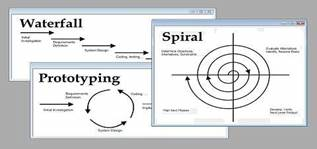

METOLOGIAS PARA EL DESARROLLO DEL SOFTWARE
Una metodología de
software es un enfoque, una manera de interpretar la realidad o la disciplina
en cuestión, que en este caso particular correspondería a la Ingeniería de Software. De hecho, la metodología
destinada al desarrollo de software se considera como una estructura utilizada
para planificar y controlar el procedimiento de creación de un sistema de
información especializada.

Una filosofía de desarrollo de
programas de computación con el enfoque del proceso de desarrollo de software
Herramientas, modelos y
métodos para asistir al proceso de desarrollo de software
Estos frameworks son a menudo vinculados a
algún tipo de organización, que además desarrolla, apoya el uso y promueve la metodología.
Actividades académicas en línea:
https://www.youtube.com/watch?v=Cnheob-ohtE
https://okhosting.com/blog/metodologias-del-desarrollo-de-software/
Modelo en Cascada
Es un proceso secuencial, fácil de desarrollo en el que
los pasos de desarrollo son vistos hacia abajo (como en una cascada de agua) a
través de las fases de análisis de las necesidades, el diseño, implantación,
pruebas (validación), la integración, y mantenimiento. La primera descripción
formal del modelo de cascada se cita a menudo a un artículo publicado por Winston Royce W.2 en 1970, aunque Royce no utiliza el término "cascada"
de este artículo.
Prototipo
El prototipo permite desarrollar modelos de aplicaciones
de software que permiten ver la funcionalidad básica de la misma, sin
necesariamente incluir toda la lógica o características del modelo terminado.
El prototipo permite al cliente evaluar en forma temprana el producto, e
interactuar con los diseñadores y desarrolladores para saber si se está
cumpliendo con las expectativas y las funcionalidades acordadas. Los Prototipos
no poseen la funcionalidad total del sistema pero si
condensa la idea principal del mismo, Paso a Paso crece su funcionalidad, y
maneja un alto grado de participación del usuario.
Provee una estrategia para controlar la complejidad y los
riesgos, desarrollando una parte del producto software reservando el resto de
aspectos para el futuro.
Los principios básicos son:
Ø La atención se centra en
la evaluación y reducción del riesgo del proyecto dividiendo el proyecto en
segmentos más pequeños y proporcionar más facilidad de cambio durante el
proceso de desarrollo, así como ofrecer la oportunidad de evaluar los riesgos y
con un peso de la consideración de la continuación del proyecto durante todo el
ciclo de vida.
Ø Cada viaje alrededor de la
espiral atraviesa cuatro cuadrantes básicos: (1) determinar objetivos, alternativas,
y desencadenantes de la iteración; (2) Evaluar alternativas; Identificar y
resolver los riesgos; (3) desarrollar y verificar los resultados de la
iteración, y (4) plan de la próxima iteración.3
Ø Cada ciclo comienza con la
identificación de los interesados y sus condiciones de ganancia, y termina con
la revisión y examinación.3